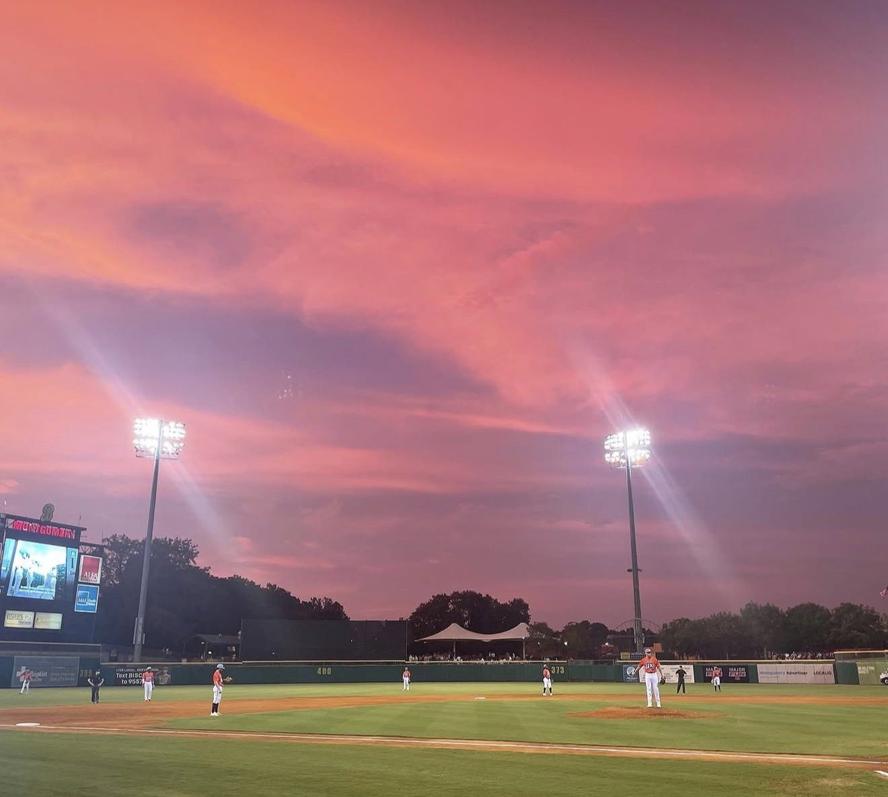

01 / Sports & community
Beyond the ballpark
Sierra's love of sports is about more than the game. While completing her degree, she worked as a Community and Fan Engagement Manager for the Montgomery Biscuits. She photographed this baseball game during her time with the team, capturing a memorable sunset above the field.
She also follows football, Formula 1, the WNBA, and professional wrestling, drawn to athletes’ personal stories and strong personalities.